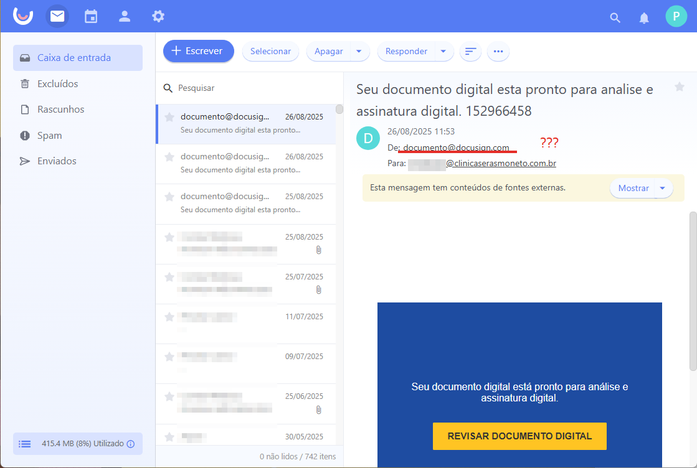
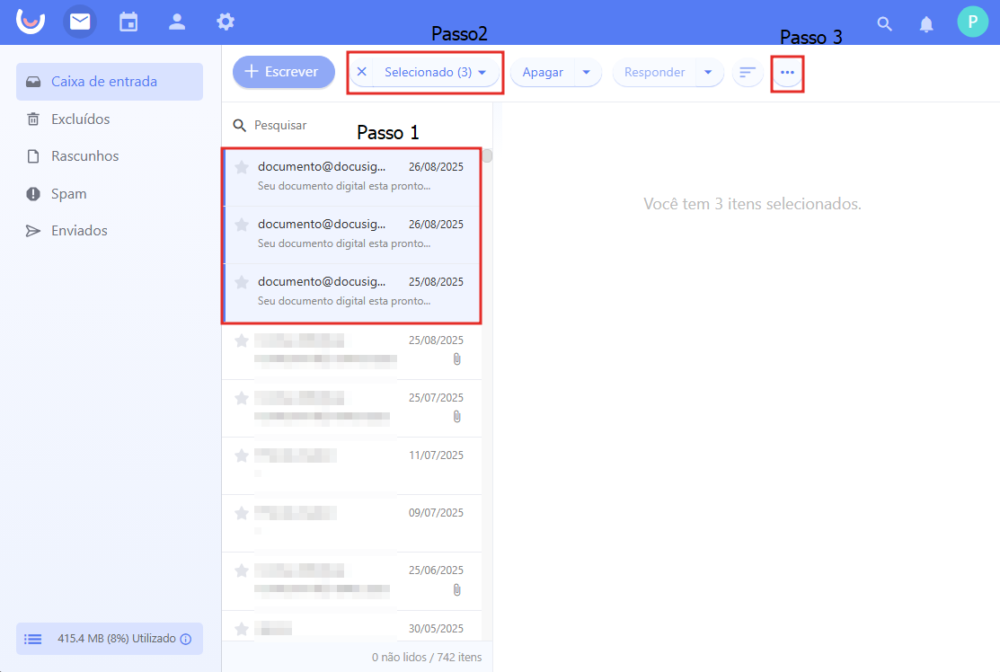
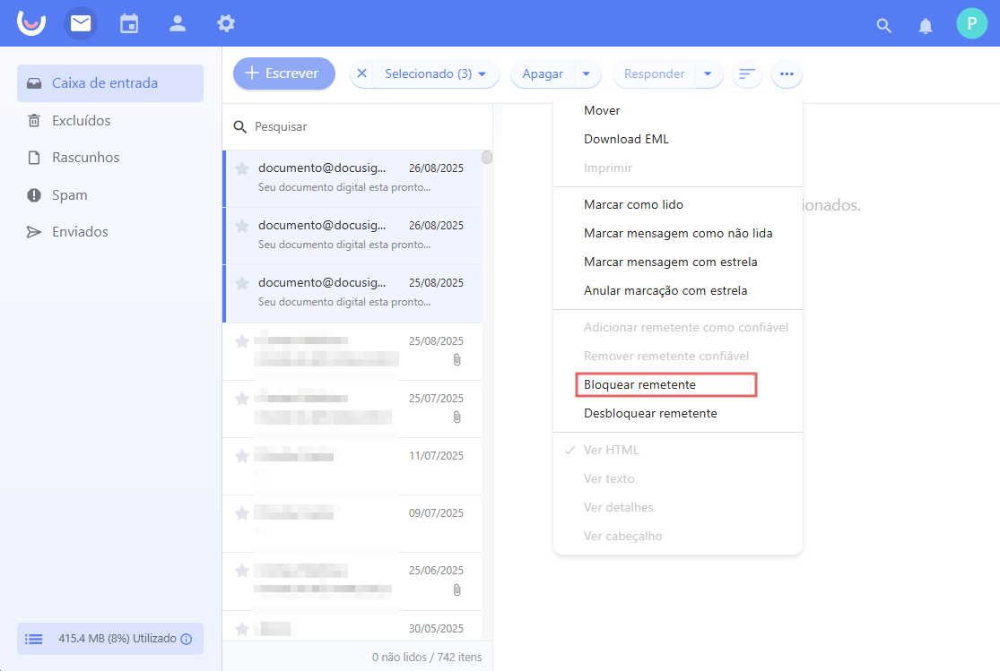

Guia Rápido: Bloqueio de Remetente
1. Perceba o remetente estranho e o botão grande para ação. Se algo parecer fora do padrão, siga para o bloqueio!
2. Selecione os e-mails suspeitos na caixa de entrada.
3. Clique nos três pontos (...) no topo e escolha “Bloquear Remetente”.
4. E-mails internos ou de parceiros legítimos podem exibir um selo de confiança. Quando visualizar o indicador
abaixo, o remetente foi marcado como confiável: